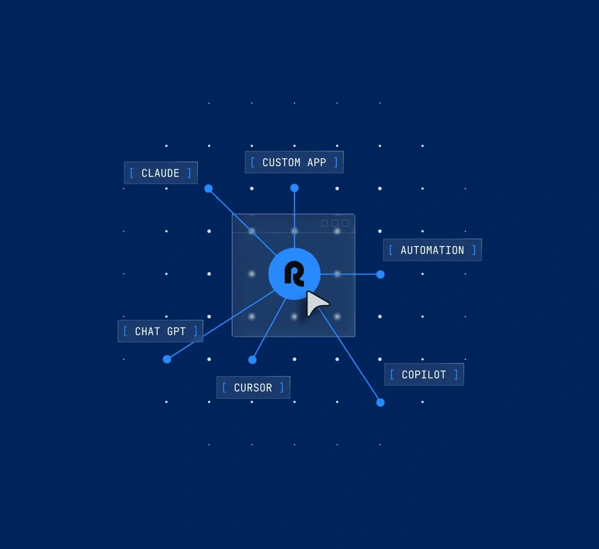

REMOTE AGENTS
Deploy AI agents on real employment data
A team of agents for the work Remote already runs: payroll, compliance, and contracts. They work on live employment data inside the system of record — and every action waits for your approval.
Save your seat
![App Store]()
![Google Play]()